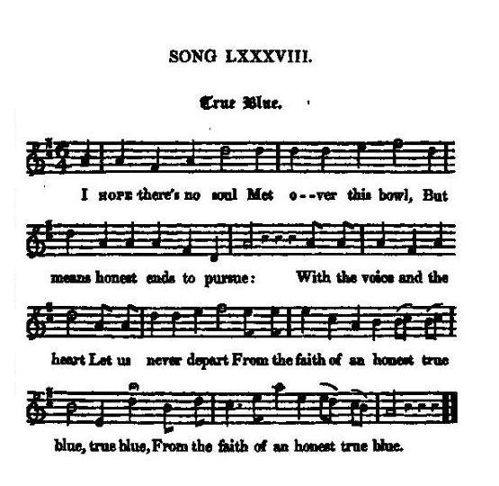

True Blue
Fidèle loyauté
A bacchanalian song
Chant bachique
Tune - Mélodie
"True Blue"
from Hogg's "Jacobite Reliques" part 1, N° 88
Sequenced by Christian Souchon

|
"I got this from Mr Stewart's collection. It is a lively clever thing, but may perhaps have been a Whig song."
Hogg in "Jacobite Songs", 1819. |
"Ce chant est tiré de la collection de M. Stewart. Il est entraînant et plein d'esprit. C'est peut-être un chant Whig!
Hogg in "Jacobite Songs", 1819. |

|
TRUE BLUE
1. I Hope there's no soul Met over this bowl, But means honest ends to pursue: With the voice and the heart Let us never depart From the faith of an honest true blue, true blue, From the faith of an honest true blue. [1] 2. For our country and friends Let us damn private ends, And keep our old virtue in view ; Stand clear of the tribe That address with a bribe, For honesty's ever true blue, &c. 3. On the politic knave, Who strives to enslave, Whose schemes the whole nation may rue; On pension and place, That curse and disgrace, Stand clear, and be ever true blue, &c. 4. As with hound and with horn We rise in the morn, With vigour the chace to pursue; Corruption's our cry, Which we'll hunt till we die; Tis worthy a British true blue, &c. 5. Here's a health to all those Who slavery oppose, And wish our old rights to renew; To each honest voice That concurs in the choice And support of an honest true blue, true blue, And support of an honest true blue. Source: "The Jacobite Relics of Scotland, being the Songs, Airs and Legends of the Adherents to the House of Stuart" collected by James Hogg, published in Edinburgh by William Blackwood in 1819. |
FIDELE LOYAUTE
1. Je veux que chacun Qui goûte à ce vin, Le fasse en toute honnêteté. Nos mots, nos pensers Ne déparent jamais Notre idéal de fidèle loyauté, jamais, Notre bel idéal de loyauté! [1] 2. Seul comptent nos amis, Notre cher pays. Et soyons dignes du passé! Et que la corruption Ne remette en question Notre idéal de fidèle loyauté... 3. A bas les agents De l'asservissement! L'état pâtit de leurs menées. Les places et les rentes Rongent comme des chancres Notre idéal de fidèle loyauté, c'est vrai... 4. Donc à cor et à cri, Dès que l'aurore luit, La chasse avec vigueur est lancée. Sus à la corruption! Imposons en Albion Notre idéal de fidèle loyauté... 5. A la santé de ceux Qui font aussi le vœu Que nos droits anciens soient restaurés! A ceux dont les voix Expriment notre choix: Notre idéal de fidèle loyauté. A jamais! Notre bel idéal de loyauté! (Trad. Christian Souchon(c)2010) |
|
[1]
True blue
: Loyal and unwavering in one's opinions or support for a cause. 'True blue' is supposed to derive from the blue cloth that was made at Coventry, in the late middle ages. The town's dyers had a reputation for producing material that didn't fade with washing, i.e. it remained 'fast' or 'true'. (source: www.phrases.org.uk).
In colloquial French, "blanc-bleu" (white-blue) means "a reliable man". |
[1]
Fidèle loyauté
: L'expression anglaise "true blue" ("bleu franc") signifie loyauté et fidélité inébranlables à une opinion ou à une cause. On veut en voir l'origine dans la toile bleue produite à Coventry à la fin du moyen-âge. Les teinturiers de cette ville étaient réputés savoir fabriquer un bleu résistant au lavage, donc 'ferme' et 'franc'. (source: www.phrases.org.uk).
L'expression familière française "blanc-bleu" signifie aussi "homme de confiance". |
|
|
|